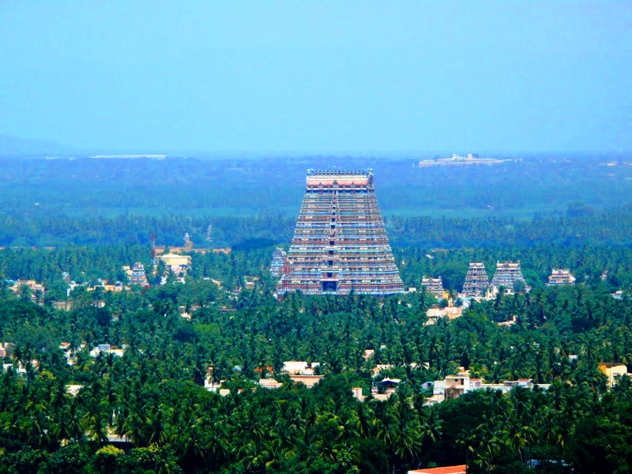

Rameshwaram is an island situated in the gulf of manner at the very tip of the Indian peninsula. A very important pilgrim centre of the Indians. Rameshwaram is the place from where Lord Rama, built a bridge across the sea to rescue his consort Sita, from her abductor, Ravana. This is also the place where Rama worshipped Lord Shiva to cleanse away the sin of killing Ravana. Both the Vaishnavites and Shaivites visit this pilgrimage which is known as the Varanasi the south.
Visiting Rameshwaram is significant for the Hindus as a pilgrimage to Benaras is incomplete without a Pilgrimage to Rameshwaram. The presiding deity is the Linga Of Sri Ranganatha, which happens to be one of the twelve Jyotirlingas of India. Rameshwaram is also popularly referred to as the 'Benaras of the south'. In order to attain Moksha it is believed that the visit to Rameshwaram is mandatory.
According to the Hindu mythology i.e. the story of Ramayana Lord Rama performed thanksgiving rituals to Lord Rama after the battle at Sri Lanka and his triumph over the demon king Ravana. Owing to this Rameshwaram attracts Vaishnavites (worshippers of Lord Vishnu) and Saivites (worshippers of Lord Shiva) alike.Sri Lanka is at a distance of 24 kilometers from Rameshwaram. In fact the entire area of Rameshwaram is associated with various incidents from the Ramayana. Rameshwaram happens to one of the most visited pilgrim sites in India.
Rameshwaram Jyotirlinga of Lord Shiva is situated on the peninsular tip Rameshwaram. It was Lord Rama who installed this Linga there, when he was on his way to attack Ravana he reached this place where he made a linga of sand and worshipped it. It was also believed that when Lord Rama was drinking water on the seashore there was a celestial proclamation - 'You are drinking water without worshipping me'.
Ramnathswamy temple was built in the 17th century. Situated close to the sea on the eastern side of the island, this temple is famous for its 1200 gigantic granite columns. The 54 metre tall gopuram (gate-tower), 1220 metres of magnificent corridors and the flamboyant columns embellish and render fame to the temple. The water in each of the 22 sacred wells in the temple tastes different
100 metres away from the temple is Agnitheertham, where Rama worshipped Lord Shiva, to absolve himself from the killing Ravana.

The imprint of Lord Rama's feet placed on a Chakra (wheel) is found in this shrine which is at the highest point on the island at 2 km from Rameswaram.
Dhanushkodi named after Rama's bow, is at the eastern end of the island at a distance of 8 kms from Rameshwaram. The boulders around the sea between Srilanka and this place known as Adam's bridge, are believed to be used by Hanuman to reach across Srilanka. Dhhanushkodi was completely destroyed by the cyclones of 1964. Kothandaramaswamy temple is the only salvage of the cyclone. Idols of Rama, Sita, Lakshmana, Hanuman and Vibhishana (brother of Ravana), surrendered to Rama, here.